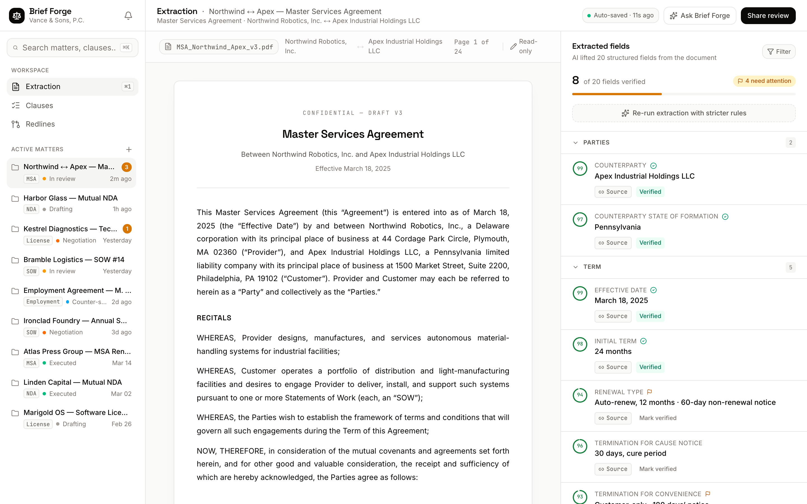
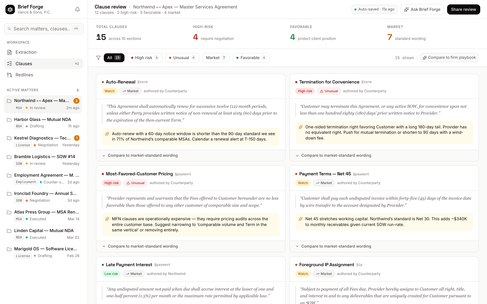
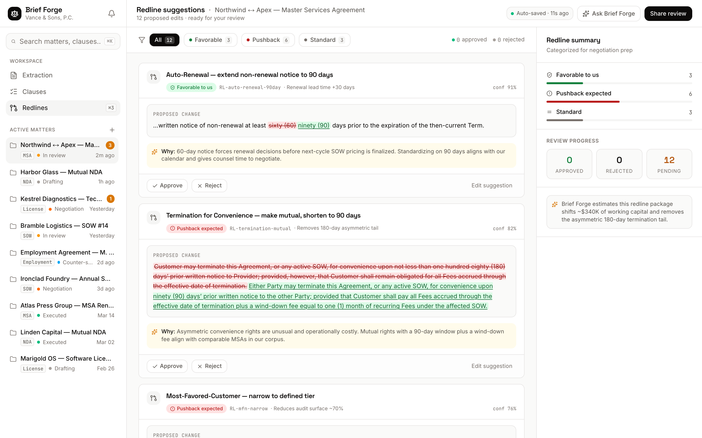

01
The first pass takes minutes, not an afternoon.
A review that ran four hours by hand compresses to about thirty. The associate opens a document that has already been read, scored, and marked up.
Legal Tech · Contract review
Brief Forge is a contract-review instrument for solo lawyers and small firms. Drop in a contract; it extracts the terms that matter, scores every clause against market standard, and drafts the redlines — with its reasoning shown in the margin, the way a good associate would.
The Provider shall indemnify the Client against any and all claimsthird-party claims arising from the Services, without limitation.
The premise
The method
Every contract passes through the same disciplined sequence. Nothing is guessed at; each output carries its source, its score, or its reasoning.
The AI reads the document and lifts 14+ structured fields — parties, term, governing law, caps, notice periods — each with a confidence ring and a citation that jumps straight back to the source clause.
Confidence-scored · Click-to-source
Every clause is graded against market standard and flagged Unusual Market Favorable — so the ones that need a human are obvious before anyone opens the file.
Clause-by-clause · vs. market standard
Where a clause is off-market, Brief Forge drafts the edit as an inline diff — strike and replacement — with a written rationale and an approve / reject control, so the lawyer stays the author.
Inline diffs · Rationale · Approve / reject
In the product



In practice
01
A review that ran four hours by hand compresses to about thirty. The associate opens a document that has already been read, scored, and marked up.
02
Off-market and unusual clauses are flagged the moment a contract lands — so the questions worth a partner's time are visible before the file is ever escalated.
03
Approvals and rejections are recorded against the matter, giving a clean, reportable record of what was changed and why — ready for the client.
For solo lawyers & small firms
Brief Forge holds every matter in a single sidebar — no per-seat sprawl, no partner-sized platform to administer. It was built for the lawyer who is also the firm.
❧ Set and built with Next.js · Tailwind · Framer Motion · TypeScript. Engineered by BuildspaceLabs for a boutique law firm under NDA.
Request access
See Brief Forge run on a live contract, or tell us about the matters your firm handles most. We will show you the extraction, the scoring, and the redlines on a document you know.